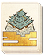

Requires
- Arts:

Enables
- Buildings:


- Arts: 

Effects
- -10% to castle construction times
- -15% to the cost of constructing castles
Description
In times of war, buildings need to be strong, sturdy, and defensible. Castles, however, also become homes, and status symbols. The way they are built has to change to reflect these peaceful and human aspects as being important alongside military requirements. Aesthetics and defence must work together. In turn, this means that traditional building styles are valued once more, and the cost and construction time of all building work undertaken in capitals is reduced.
With the rise of the daimyo warlords, Japan underwent a cultural change. The ruling warrior class was able to impose their values on Japanese culture though their patronage of the arts. The architecture and art of the Sengoku Jidai stressed both honour and militaristic leanings: extravagant castles were eloquent testaments to wealth and status, whilst paintings and wall hangings depicted mighty battles.
The Edo period brought unification and peace to Japan. Once again, art changed to reflect the times: battle and heroic paintings were replaced by simple themes of everyday scenery and life. The warriors who were once patrons devoted themselves to new pursuits, such as studying religion, and the rising merchant class became the new patrons.